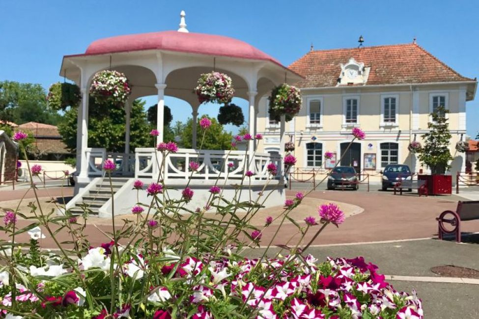

Parentis-en-Born es la tercer pueblo más importante del Pays de Born, después de Mimizan y Biscarrosse.
Tiene una extensión de 11 155 hectares al este del lago de Parentis-Biscarrosse, el segundo de las Landas por superficie (3 540 ha).
situada al norte de Las Landas, limita con Biscarrosse, Gastes, Lüe, Pontenx-les-Forges, Ychoux, Sanguinet, Saint-Paul-en-Born, Sainte-Eulalie-en-Born y Lugos.
El pueblo en si, no tiene mucho, pero si que destaca y de alguna manera es chocante, saber que, Parentis posee la mayor reserva de petróleo, descubierta en 1954.
Paseando por el lago, puedes ver las antiguas bombas extractoras y las plataformas que hay en el lago. A modo de curiosidad, la empresa extractora es de origen canadiense
Es recomendable, pasear a las últimas horas del día para ver la puesta de sol y la visita a un bar que hay junto al puerto del lago con unas vistas increíbles del lago. Eso si,
Francia es caro, según lo caro que quieres que sea y ese bar, llamado Rose & Joséphine, con esas vistas, merece la pena pagar ese poquito de más.
En septiembre, estuvimos alojados en uno de sus campings y todo era paz y tranquilidad, con lluvia aún más. El pueblo es tranquilo, con mucho movimiento
los días de mercado. La costa la tienes en Biscarrosse a unos 20 kms y si te apetece ir a Bordeaux, pues a una hora. Cerca también esta Arcachon, conocida
por sus ostras y la Duna de Pylat, la mayor duna de arena europea, que a no pertenecer a las Landas, si que merecería un apartado en esta web.